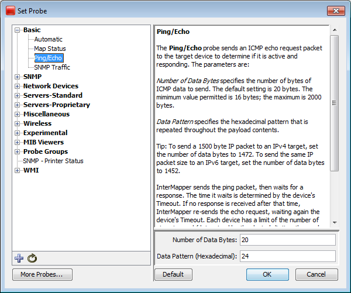

The <description> Section
The Description section of a probe file contains text that will be displayed
as a description of the probe in the Set Probe window. All probe types can have a description section. It is
defined using the following tags:
<description> ... </description>
The description can be formatted using IMML, InterMapper's Markup Language. The Example
Probe File (Pg 1) shows a sample description section.

The Set Probe window, showing
the description field. Note that the blue underlined links are actually
links to the relevant RFC specifications.